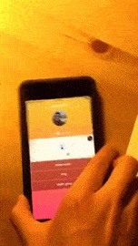

Over the summer, I went to Chimehack2 with a few friends.
Background on the hackathon's theme:
One of the categories for Chimehack was campus safety. Based on our experiences with campus safety, mosts of the time whenyour friend goes missing, they won't pick up the phone, and you don't know if their phone is dead. They're probably not in enough danger to call campus safety, but that doesn't mean you're not concerned for your friend.
That's why we built an iOS app that makes it easier to communicate in groups without annoying group messages. Groups are temporarily created, and information about each friend's location and battery level is displayed along with the time they want to go home.
Because we had 48 hours, I had under 12 hours until it was time to freeze the flow. We formed teams friday night. I spent the next morning designing and going through decisions with my teamates, and started exporting assets after lunch.
Usability was my key concern, so I spent most of my time refining the onboarding process. Because we were at Twitter, we receieved a lot of feedback about the challenges when creating a product that only works when many users choose to engage. At the time, they just started promoting Periscope, and even for them, they had no idea whether or not people would actually like it. Nandini Ramani told us that after this weekend, we succesfully built a great fully functioning app, but we won't know if people will like it until we release it to the public.
Here's a screenshot of the splash screen, illustrating the brand and styling.
One goal of Chimehack 2 was to promote inclusivness in technology, and the goal of our app was to make it easier for friend groups to stay together when out on a weekend. A key theme throughout the weekend was inclusiveness, so stylistically I wanted to convey friendliness and diverse user base. To convey friendliess I went with warm passionate colors, and our heart shaped logo. The best thing I could do to make sure we didn't attract the traditional tech-y user base was to make the app look less stereotypical, hence the granjon/roman typeface that you may recognise when walking around a mall...
The resting screen
We used the facebook SDK when generating user accounts so our avators are pulled from our profiles. Key features include - displaying distance from friend based on location info - displaying battery life As well as user friendly conviniences such as - predefined status updates - push notifications for entire group You can't see our our friend Revan's battery status because he has an adroid and we built this for iOS. We're all the same distance apart because we were standing next to eachother.
The detail screen.
Usually when you've assembled your group, there's one person missing. When calling doesn't work, we have an inline map that points you in the direction of that person.
We built this app because this was a tool missing from our everyday lives, and for the rest of the summer we would often use it as a tool to ping and find eachother. Since then, apple released a standalone friend finder, and we also saw an app named Companion gain popularity around college campuses.
In restrospect, the technology wasn't earth shattering, but this is a great example of how fast a talented team can work when there is good chemistry: in one weekend we built something that would usually take half a year at a company. Check out the github Back home